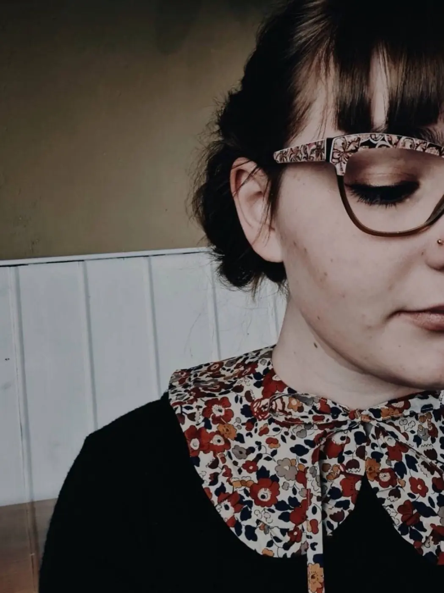

Steckbrief
Cathrin
Schneiderin mit Herz und Seele
Hallo, ich bin Cathrin. Schneiderin mit Herz und Seele
Röcke auf Maß, Kleider aus alter Bettwäsche, Wendekragen und warme Kleinigkeiten. Jedes Teil nähe ich selbst, und viele gibt es nur ein einziges Mal.
Gerade besonders gern genäht. Tippe ein Teil an, dann siehst du alle Fotos und Details.
Mein kleiner Steckbrief, damit du weißt, wer hinter Flora & Grete steckt.
Steckbrief
Schneiderin mit Herz und Seele

Ein paar liebe Worte aus meinen Etsy-Bewertungen, und was ich darauf geantwortet habe.
Wo du mich und meine Sachen demnächst live triffst, und was es Neues gibt.
Märkte, offenes Atelier, Kurse
Neues aus Shop und Atelier
Komm vorbei, fühl die Stoffe und lass dich in Ruhe ausmessen. Such dir einfach einen freien Termin aus, ich bestätige ihn dir persönlich.
Mein Mini-Atelier liegt in Ramsen, mitten in der Pfalz. Besuch und Abholung gibt es nur nach kurzer Absprache.
Ich antworte meist innerhalb eines Tages.
Ramsen liegt zwischen Eisenberg und dem Pfälzerwald.
Die Karte kommt von Google. Erst wenn du sie lädst, werden Daten an Google übertragen.
Deine Frage ist nicht dabei? Schreib mir einfach, ich helfe dir gern weiter.
Frage über Etsy stellen